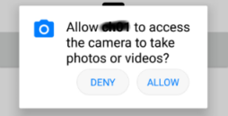

The Camera external object enables you to programmatically take photos and record videos using the device's camera.
PropertiesIt does not have any. MethodsTakePhoto methodTo take a photo using the device's camera.
RecordVideo methodTo record a video using the device's camera. You can indicate (optionally) the quality that the video will be recorded with, affecting the file size and transfer time over the network. If this parameter is not sent, the value used is the medium.
EventsIt does not have any Example
Event 'RecordVideo'
Composite
&Video = Camera.RecordVideo()
UploadVideo(&Video)
EndComposite
EndEvent
Event 'TakePhoto'
Composite
&Image = Camera.TakePhoto()
SaveImage(&Image)
EndComposite
EndEvent
Scope
AvailabilityThis external object is available as of GeneXus X Evolution 2 Upgrade 7.
ConsiderationsAndroid apps will ask for a permission when they need it. For example, instead of giving an app access to your camera when you install it, you’ll be prompted the first time the app wants to access your camera.  You can change the permissions that apps can access in the main Settings app on your device at any time. Keep in mind turning off permissions may cause apps on your device to lose functionality. Check for more information here. See also
|
| Backlinks | |
| GeneXus Core module | |
| Purpose Strings properties group | Category:Smart Devices API |